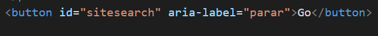

Fallos comunes en paginas web
10 Fallos comunes:
1 Fallo debido a que el nombre accesible no contiene el texto de la etiqueta visible.
En este caso el boton dice 'go' pero en su atributo de etiqueta aria dice otra cosa y eso puede crear confusiones.

2 Incumplimiento del criterio 1.4.8 debido al uso de texto justificado (alineado con los márgenes izquierdo y derecho)..
Es recomendable no usar texto justificado ya que puede dar lugar a crear rios de espacios lo cual no es idoneo para gente que le cuesta leer lo recomendable es que este alineado a la izquierda.
3 Imágenes de fondo que no brindan suficiente contraste con el texto de primer plano (o imágenes de texto) .
No debemos de poner color de letras que con la imagen de fondo sean ilegibles.
4 Fallo al duplicar id en elementos html .
Nunca se debe de usar un id repetido en los elementos de una pagina web para eso tenemos class
5 Fallo debido a la creación de enlaces que no son evidentes visualmente sin visión de color.
Para que un enlace sea visible debe tener un color distino, tiene que estar subrayado y se le puede aplicar un color de hover al pasar el raton sobre el.
6 Fallo debido a la presentación de enlaces de navegación en un orden relativo diferente en diferentes páginas.
Todas las paginas deben tener el mismo orden de el nav.
7 Fallo debido al uso de dos etiquetas diferentes para la misma función en diferentes páginas web dentro de un conjunto de páginas web.
Debemos tener siempre las mismas etiquetas bien estructuradas en cada pagina de nuestra pagina web.
8 Fallo debido a la omisión del atributo alt o la alternativa de texto en elementos img, elementos de área y elementos de entrada de tipo "imagen".
9 Fallo debido al uso del elemento pre para marcar la información tabular.
No se recomienda usar la etiqueta pre .
10 Fallo debido al uso del elemento blink.
El elemento blink hace que el contenido parpadee mientras se muestra la pagina y por lo tanto no cumple con el criterio de cumplimiento.